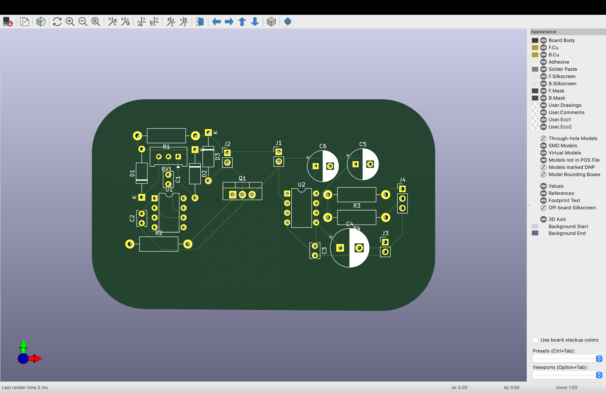
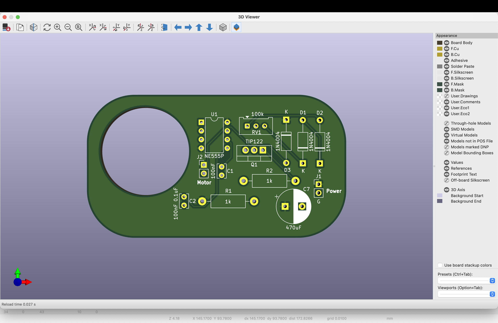

Version 1: Summer 2024
Version 1 was done in a rush so the layout was clustered and not though out or labled
I added a QR code to my old website and ordered the board in red with 1mm width
Version 2: Fall 2024
For Version 2 I added some labels and spread out the components a bit more.
I also was doing testing with Version 1 and there were some noise issues, especially when the motor was on a lower setting. So I added a 470 uF capacitor across the power input to help with noise. This pcb was my first board over 2 layers, it has a middle ground plane to help separate the noisy PWM motor control circuit and the sensitive lm386 audio amplifier.
Version 3: Winter 2025
For Version 3 I lined up the PCB with the STL files and cut a hole out for the motor as the goal is to have this circuit board in the Altoid tin along with the motor and everything else needed for the cassette player. The addition of the motor hole meant that I could not fit both the motor control circuit and the audio amplifier circuit on the same PCB as through hole components, so I separated them into two separate boards. I think the next step may be switching over to surface mount but I do enjoy being able to modify and repair my circuits, and that is much easier with through hole components. I added a ground and power plane to help with noise.
Amplifier:
Motor:
